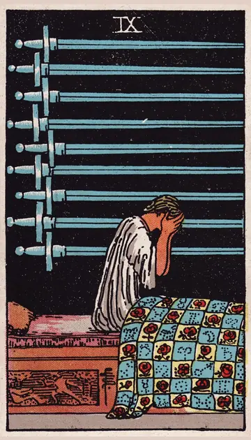

正位置ソードの9の正位置
キーワード：不安・心配・眠れない夜
恋愛
不安や心配が、大きくなりやすい時です。
相手の気持ちあなたとの関係に、不安を抱えているようです。
この先不安の多くは、思ったほどではなさそうです。
アドバイス不安を紙に書き出して、事実と想像を分けてみましょう。
気をつけること最悪のことばかり、想像しないように。
この先不安の多くは、思ったほどではなさそうです。
アドバイス不安を紙に書き出して、事実と想像を分けてみましょう。
気をつけること最悪のことばかり、想像しないように。
人間関係
人間関係の悩みが、頭から離れない時です。
相手の気持ちあなたのことを、心配しているようです。
この先話すことで、心が軽くなりそうです。
アドバイス信頼できる人に、悩みを打ち明けましょう。
気をつけること一人で抱え込みすぎないように。
この先話すことで、心が軽くなりそうです。
アドバイス信頼できる人に、悩みを打ち明けましょう。
気をつけること一人で抱え込みすぎないように。
仕事・学業
心配事が多く、プレッシャーを感じやすい時期です。
この先心配していたことが、うまく収まりそうです。
アドバイス心配事を一つずつ、対処できる形にしましょう。
気をつけること心配から、無理をしすぎないように。
アドバイス心配事を一つずつ、対処できる形にしましょう。
気をつけること心配から、無理をしすぎないように。
お金
お金の心配が、頭から離れない時です。
この先確かめれば、不安は小さくなりそうです。
アドバイス心配を、数字にして確かめましょう。
気をつけること最悪のことばかり想像しないように。
アドバイス心配を、数字にして確かめましょう。
気をつけること最悪のことばかり想像しないように。
生活
不安で、眠れない夜が続きやすい時です。
この先朝には、気持ちが落ち着きそうです。
アドバイス寝る前に、不安を紙に書き出しましょう。
気をつけること夜に考えごとをしすぎないように。
アドバイス寝る前に、不安を紙に書き出しましょう。
気をつけること夜に考えごとをしすぎないように。
今日の運勢
不安な気持ちになりやすい日です。
この先朝には気持ちが落ち着きそうです。
アドバイス夜は早めに休みましょう。
気をつけること夜更かしして、悩み続けないように。
アドバイス夜は早めに休みましょう。
気をつけること夜更かしして、悩み続けないように。
逆位置ソードの9の逆位置
キーワード：不安が和らぐ・相談・回復
恋愛
不安が、少しずつ和らいでいく時です。
相手の気持ちあなたとの関係で抱えていた不安が、和らいできているようです。
この先安心感のある関係に、戻っていきそうです。
アドバイス楽になった気持ちを、大切にしましょう。
気をつけること不安が戻っても、自分を責めないように。
この先安心感のある関係に、戻っていきそうです。
アドバイス楽になった気持ちを、大切にしましょう。
気をつけること不安が戻っても、自分を責めないように。
人間関係
悩みを話せる相手が、見つかる時です。
相手の気持ちあなたに、悩みを打ち明けたいと感じているようです。
この先支え合える関係が、深まりそうです。
アドバイス支えてくれた人に、感謝を伝えましょう。
気をつけることまた一人で抱え込まないように。
この先支え合える関係が、深まりそうです。
アドバイス支えてくれた人に、感謝を伝えましょう。
気をつけることまた一人で抱え込まないように。
仕事・学業
心配事が落ち着き、回復に向かう時期です。
この先状況が落ち着いていきそうです。
アドバイス次に同じことが起きたときの備えを、考えておきましょう。
気をつけること安心して、気を抜きすぎないように。
アドバイス次に同じことが起きたときの備えを、考えておきましょう。
気をつけること安心して、気を抜きすぎないように。
お金
お金の心配が、和らいでいく時です。
この先ほっとできそうです。
アドバイス次に備えて、少し蓄えておきましょう。
気をつけること安心して、気を抜きすぎないように。
アドバイス次に備えて、少し蓄えておきましょう。
気をつけること安心して、気を抜きすぎないように。
生活
不安が和らぎ、眠りやすくなる時です。
この先穏やかに過ごせそうです。
アドバイス整ってきた生活を、大切に続けましょう。
気をつけること不安が戻っても、自分を責めないように。
アドバイス整ってきた生活を、大切に続けましょう。
気をつけること不安が戻っても、自分を責めないように。
今日の運勢
ほっとできる日です。
この先よく眠れそうです。
アドバイスゆっくり休んで、心を整えましょう。
気をつけること無理に明るく振る舞わないように。
アドバイスゆっくり休んで、心を整えましょう。
気をつけること無理に明るく振る舞わないように。
このページの文章は、アプリ「ひとやすみタロット」の結果に使っている文章です。アプリでは、あなたの相談や、カードが出た位置（今の状況・これからの流れ・アドバイス）に合わせて、この中から文章を選びます。逆位置の読み方は逆位置のことをご覧ください。
「ソードの9」が出たら、あなたの相談ではどう読む？
アプリでは、質問への答えに合わせて、カードの言葉をあなたの相談に合わせて届けます。
Android 対応・会員登録なし